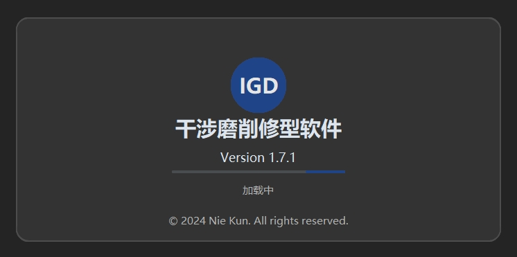
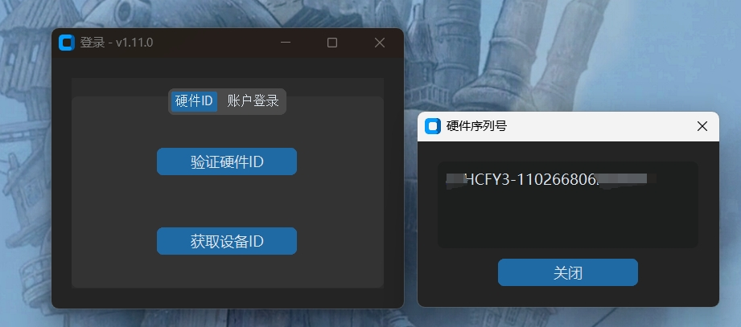
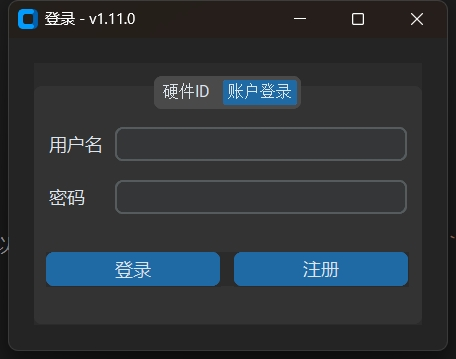
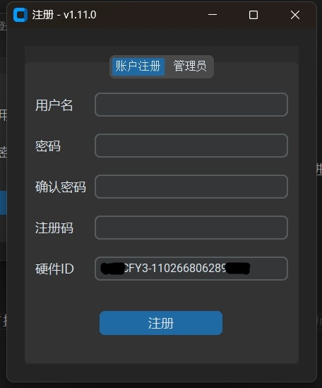

软件安装
Interference Grinding Dressing 软件安装包需在购买后联系开发者获取：
- Windows 用户：下载并安装
.exe文件。 - macOS 用户：下载并安装
.dmg文件。
安装步骤
Windows 系统
- 双击下载的安装包 (
.exe) 文件。 - 按照安装向导提示完成安装。
- 安装完成后，桌面会生成快捷方式，双击即可启动软件。
macOS 系统
- 打开下载的
.dmg文件。 - 将软件图标拖动到“应用程序”文件夹。
在“应用程序”中找到软件图标，双击启动软件。

获取授权
首次启动软件时，需完成授权验证。您可以通过 硬件 ID 验证 或 账户登录 的方式获取授权，以便正常使用软件。
验证硬件 ID
- 启动软件后，选择 硬件 ID 验证。
点击
获取设备ID按钮，生成当前设备的硬件 ID。
将硬件 ID 发送给开发者，开发者将您的设备加入授权名单。
- 完成授权后，点击
验证硬件ID按钮，进入软件界面。
注意：设备成功授权后，可离线使用，无需联网再次验证。
账户登录
- 启动软件后，选择 账户登录 选项卡。
输入账户信息（用户名和密码），点击
登录进入软件界面。
如无账户，需先注册。点击左下角的
注册按钮，进入注册界面。
在注册界面：
- 输入必要的注册信息。
- 使用从开发者处获取的注册码完成注册。
- 点击
注册按钮提交。
注册成功后，使用注册账号登录软件。
注意：使用账号登录时，设备必须保持联网状态，否则无法完成登录。
通过上述步骤，您即可完成 Interference Grinding Dressing 软件的安装和授权。如有疑问，请联系开发者获取更多支持。